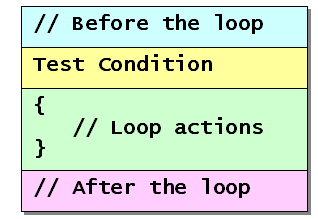
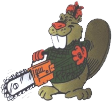

Writing perfect code the first time is something of a "Holy Grail" among programmers. By that I mean that most programmers long to do it, but the vast majority consider its attainment to be the stuff of legend.
 Writing loops is one area where programming errors
often crop up. Several years ago, however, I happened upon a
technique developed by Doug Cooper, the Berkeley professor of
"Oh! Pascal" fame, for building loops. This technique
really does increase your chances of building correct loops the
first time, and it's worth the effort it takes to learn it.
Writing loops is one area where programming errors
often crop up. Several years ago, however, I happened upon a
technique developed by Doug Cooper, the Berkeley professor of
"Oh! Pascal" fame, for building loops. This technique
really does increase your chances of building correct loops the
first time, and it's worth the effort it takes to learn it.
Bound, Goal, and Plan
 The first step in building a successful loop is to
be able to describe (and separate) the loop's bound from
the loop's goal, and then come up with a plan for
reaching your goal.
The first step in building a successful loop is to
be able to describe (and separate) the loop's bound from
the loop's goal, and then come up with a plan for
reaching your goal.
The bounds is the portion of the loop that makes it work "mechanically", while the goal of the loop is the work that you want to accomplish. The plan is the strategy you'll follow to both reach the bounds and, if possible, meet your goal.
Here's an example problem statement that we can use to examine the difference:
Count the characters in a string until a period is encountered. Every string will contain at least one period.
Using this problem statement, you'll find that
- the goal of the loop is to count the characters that precede a period.
- the bounds of the loop are "a period was encountered."
- the plan is to a) "read" a character, and b) increment a counter
We can use the same bounds with a different goal:
Print each character in a string until a period is encountered.
Here, the bounds is the same, but the goal is different. We're not counting, we're printing. Notice that our plan would change as well. Instead of adding one to a character, in step b), we'd simply print the character.
Implementing the Plan
Now that you have a "plan", you might be wondering how to put that into action; what tactics do you use to implement your overall strategy? We'll start by looking at the overall topology of a loop.

If you put a loop inside a program, as we've done with this top-tested loop, you can see that there are- actions that occur before the loop is encountered
- a test that determines the loop's bound
- actions that occur inside the loop body
- actions that occur after the loop is complete
These four "faces" of a loop are called its precondition, its bound, its action or operation, and its postcondition. Remember these terms, because we'll use them to determine exactly where to start working on our loop.
Step 1: Determine the Bounds

If you've ever bought a new appliance (like a chain-saw maybe), or a new software package, what's the first thing you need to learn?That's where you should always start writing your loops; ask yourself:
Making sure your loops can quit is the single most important thing that you can do.
Let's take our first example in the previous section, and write the loop bounds in pseudocode. (Pseudocode is simply writing a program using "English-like" phrases instead of a particular programming language.)
// Step 1 : The bounds
// Before the loop
While current-character is not a period
{
// Inside the loop
}
// After the loop
Step 2: The Preconditions
Step 1, writing the bounds, makes sure that it is possible to get out of the loop. When you write this portion you'll have to make sure your Boolean condition is not unavoidable or impossible, just as you did with selection statements.
Now that you've convinced yourself that it's possible to exit the loop, you have to write the statements that make it possible to enter the loop. Step 1 asks "How do I get out?", while Step 2 asks:
Take a look at your bounds condition:
While current-character is not a period
and ask yourself:
- what is
current-character? - where did it come from?
- how did it get a value that I can check?
If you were to write your bounds condition in a Java program, it
would not compile because the variables it refers to don't yet
exist. Precondition statements usually involve creating
variables and initializing them to some reasonable
state. In our example, we have two variables implied by the
problem statement, current-character, which is a
character, and sentence, which is a string.
Before you encounter the loop bounds,
you must make sure that current-character holds one
of the characters in sentence, otherwise, you have
no assurance that you will ever enter the loop--the value in
current-character will be unknown.
In pseudocode, we could write this as:
// Step 2 : The bounds precondition
The variable sentence is a string
The variable current-character is a character
Place the first character in sentence into current-character
While current-character is not a period
{
// Inside the loop
}
// After the loop
Step 3: Advance the Loop
Now that you've written the bounds and preconditions,
it's time to advance the loop. Advancing the loop means
that you add statements to the loop body that move you
closer toward the loop bounds.
 Suppose, for instance that we didn't put any statements
inside the loop body used here. What would happen?
Suppose, for instance that we didn't put any statements
inside the loop body used here. What would happen?
- If the sentence began with a period, the loop would not be entered and the program would perform correctly.
- Otherwise, when the loop body was entered, nothing
in the body would change the value of
current-character, so you would have no way out of the loop; it would simply repeat over and over, endlessly. Creating such endless or infinite loops is a very, very common error.
To avoid an endless or "dead" loop, you must make sure that the statements on the inside of the loop body change something that is tested in the loop bounds.
In this case, that's as simple as storing the next character in the sentence in the current-character, like this:
// Step 3 : Advance the loop
The variable sentence is a string
The variable current-character is a character
Place the first character in sentence into current-character
While current-character is not a period
{
Store the next character from sentence in current-character
}
// After the loop
Moving Toward the Goal
At this point, the mechanical portion of your loop—the part that makes it "work", so to speak—is finished. You should be able to compile your code (once you "translated it" to a programming language, of course), and it should run correctly.
The whole purpose of a loop, however, is to get some real work done, to accomplish the goal. Up until now, we've ignored the goal portion entirely, because we want to make sure the loop works, before we put it to work.
When writing the code to carry out the goal of the loop you follow a different order than you did while working on the loop bounds. When concentrating on the loop's goal, you'll:
- start in the precondition area,
- move to the operations in the loop body,
- and then deal with the postcondition.
You didn't have to worry about the postcondition region while programming the mechanical operation of the loop, but it is often significant when it comes to the loop's goal.
Let's look at each of these steps in a little more detail.
Step 4: The Goal Precondition
The goal of every loop (like the goal of every program) is to produce information of some sort or to carry out some useful modification of a piece of data, such as increasing the price of all of the products in your database. (I guess you could have a loop that was designed just to take up some processor time, but I won't consider those kinds of loops here).
Many common loops involve two kinds of calculations: counting things and adding up or otherwise processing different quantities. To do that, you'll often create special kinds of variables called counters and accumulators. An accumulator is just a name used for a variable that stores a sum of some sort.
In the precondition area of your loop, you'll create and initialize the variables necessary to carry out the goal of the loop. In our case, the goal is to count the characters in the first sentence, so we need a counter variable initialized to zero.
Ask yourself:
Then, ask yourself what variables you'll need to store that information.
Step 5: The Goal Operations
Because a loop can have many different goals, its very hard to generalize about this step. A good way to start, though, is to look at the variables you created in Step 4, and ask:
Are you calculating a sum, counting different occurrences, or transforming existing values into new values?
The statements inside the loop body will almost always update the variables created in the precondition in some way. For this example, we merely need to increment our counter every time through the loop, since each time we read a character (that isn't a period), we want to count it.
Step 6: The Postcondition
In the postcondition, you often must check one of the bounds conditions to see how to proceed, but that's not always the case. Let me give you a short example.
Suppose you were writing a loop to calculate the average of all the positive numbers entered by the user. For your bounds condition, you had the user enter 0 or a negative number. When the loop terminates, you can't immediately calculate an average; instead, you'll have to first check to see if the user actually entered some positive numbers; if the user immediately terminated the loop by entering a negative number, attempting to calculate an average would result in a "divide by zero" error.
As I said, you don't always need to write code to deal with the postcondition; however, you still need to ask yourself this question whenever you're loop is finished:
In our case, we don't need to check the postcondition because, if we never enter the loop, our counter will be zero, which is the correct answer.
Here's the finished pseudocode for our loop:
// Steps 4-6 : Implement our plan
The variable sentence is a string
The variable current-character is a character
Place the first character in sentence into current-character
The variable number-of-characters is an integer, initial value zero
While current-character is not a period
{
Add one to the number-of-characters
Store the next character from sentence in current-character
}
Variable number-of-characters contains count of characters in sentence

Writing Loops Summary
- Loops are a common source of programming errors. To build correct loops, it helps to use a strategy that provides step-by-step guidance. The strategy presented here was developed by Doug Cooper from Berkeley.
- The first step is to separate the bounds from the goal and then develop a plan. The bounds is the test that makes the loop work "mechanically"; the goal of the loop is the work that you accomplished. The plan is the strategy you'll follow.
- The first three steps of the strategy involve the loop mechanics. You should get the loop working correctly before you put it to work.
- The first step of the strategy is to determine the bounds. The most important step is making sure your loop stops at the correct position.
- The second step is to add the bounds preconditions. Add necessary variables and initialization required to meaningfully test the bounds condition.
- Step three is to advance the loop. Add statements necessary to make move you closer to the bounds on each iteration.
- The next three steps involve the loop goal. Every loop is designed to produce some information. This is the loop's goal.
- Step four involves the goal preconditions. Determine what kind of information your loop is supposed to produce; then create and initialize the variables needed to hold the information. Often this involves accumulators and counters.
- Step five is performing the goal operations. This is the processing step. If you know what information you want after the loop is finished, just ask yourself "How should the data be processed?"
- Finally, you must consider the loop postcondition. It is possible to reach to loop bounds (and stop the iteration) without reaching your goal. You won't always have code for the post condition, but you must always consider it.